用户设置与工作区设置
你可以通过各种设置将 Visual Studio Code 配置成自己喜欢的样子。VS Code 编辑器、用户界面和功能行为的几乎每个方面都有可供修改的选项。
VS Code 提供不同作用域的设置：
- 用户设置 - 全局应用于你打开的任何 VS Code 实例的设置。
- 工作区设置 - 存储在工作区内部，仅在打开该工作区时生效的设置。
VS Code 将设置值存储在一个 settings JSON 文件中。你可以通过编辑 settings JSON 文件或使用设置编辑器来更改设置值，后者提供了一个图形化界面来管理设置。
用户设置
用户设置是你个性化定制 VS Code 的个人设置。这些设置全局应用于你打开的任何 VS Code 实例。例如，如果你在用户设置中将编辑器字体大小设为 14，那么你计算机上所有 VS Code 实例中的字体大小都将为 14。
你可以通过以下几种方式访问用户设置：
- 在命令面板（
kb(workbench.action.showCommands)）中选择 首选项: 打开用户设置 命令 - 在设置编辑器（
kb(workbench.action.openSettings)）中选择 用户 选项卡 - 在命令面板（
kb(workbench.action.showCommands)）中选择 首选项: 打开用户设置 (JSON) 命令
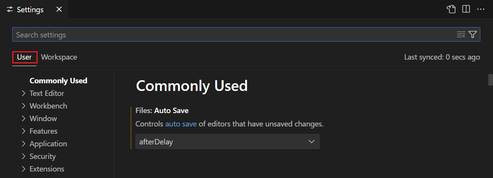
工作区设置
工作区设置是针对特定项目的设置，会覆盖用户设置。如果你有想要应用于特定项目的特定设置，可以使用工作区设置。例如，对于一个后端服务器项目，你可能想要设置 files.exclude 设置，以在文件资源管理器中排除 node_modules 文件夹。
[!NOTE]
VS Code "工作区"通常就是你的项目根文件夹。你也可以通过多根工作区功能，在一个 VS Code 工作区中拥有多个根文件夹。获取有关 VS Code 工作区的更多信息。
VS Code 将工作区设置存储在项目根目录的 .vscode 文件夹中。这样可以方便地在版本控制（例如 Git）项目中与他人共享设置。
你可以通过以下几种方式访问工作区设置：
- 在命令面板（
kb(workbench.action.showCommands)）中选择 首选项: 打开工作区设置 命令 - 在设置编辑器（
kb(workbench.action.openSettings)）中选择 工作区 选项卡 - 在命令面板（
kb(workbench.action.showCommands)）中选择 首选项: 打开工作区设置 (JSON) 命令
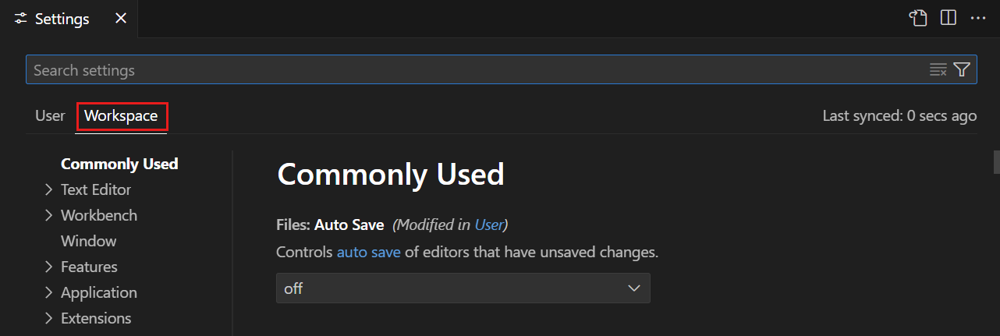
并非所有用户设置都可以作为工作区设置使用。例如，与更新和安全相关的应用程序范围设置不能被工作区设置覆盖。
设置编辑器
设置编辑器提供了一个图形化界面来管理用户和工作区设置。要打开设置编辑器，请导航到 文件 > 首选项 > 设置。或者，从命令面板（kb(workbench.action.showCommands)）中使用 首选项: 打开设置 打开设置编辑器，或使用键盘快捷键（kb(workbench.action.openSettings)）。
默认情况下，设置编辑器以模态覆盖层的形式在编辑器区域上方打开。你可以通过 setting(workbench.editor.useModal) 设置更改此行为。当你打开 settings JSON 文件时，它会作为常规编辑器标签页在主窗口中打开。
当你打开设置编辑器时，可以搜索和发现你正在寻找的设置。当你使用搜索栏搜索时，设置编辑器会筛选设置，仅显示符合你条件的设置。这使得查找设置变得快速而简单。
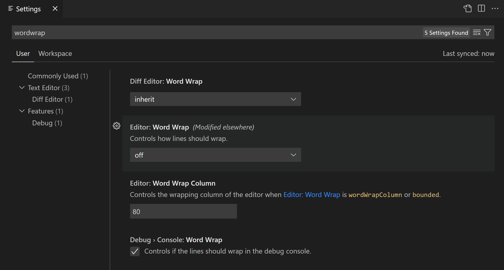
VS Code 会在你更改设置时直接应用更改。你可以通过设置左侧的彩色条来识别你修改过的设置，类似于编辑器中已修改的行。
在下面的示例中，侧边栏位置和文件图标主题已被更改。
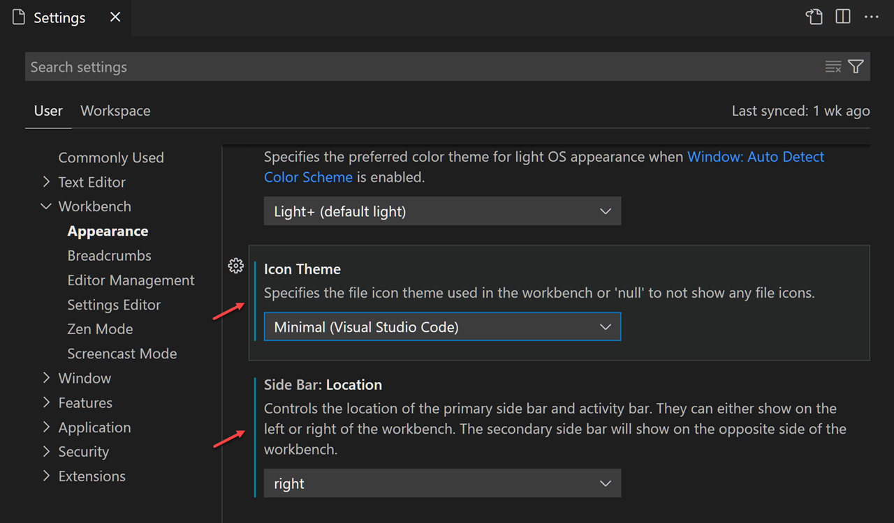
设置旁边的齿轮图标（kb(settings.action.showContextMenu)）会打开一个上下文菜单，其中包含将设置重置为默认值、复制设置 ID、复制 JSON 名称-值对或复制设置 URL 的选项。
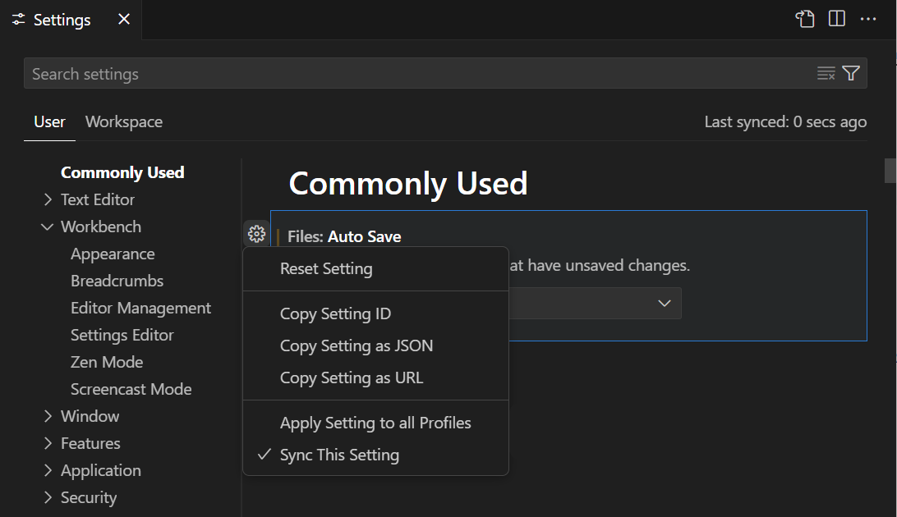
[!TIP]
设置 URL 使你能够从浏览器直接导航到设置编辑器中的特定设置。URL 的格式为vscode://settings/，其中是你想要导航到的设置 ID。例如，要导航到workbench.colorTheme设置，请使用 URLvscode://settings/workbench.colorTheme。
设置分组
设置以分组形式呈现，以便你可以快速导航到相关设置。顶部有一个常用分组，显示常见的个性化定制设置。
在以下示例中，通过在树视图中选择源代码管理来聚焦源代码管理设置。
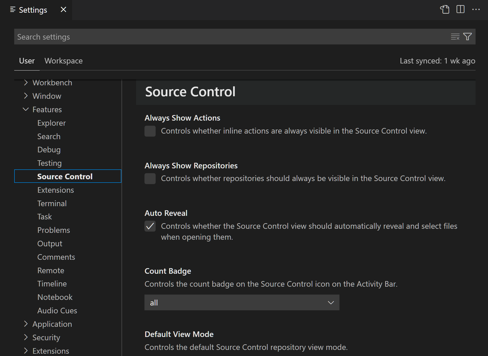
[!NOTE]
VS Code 扩展也可以添加自己的自定义设置，这些设置会在扩展部分下显示。
设置编辑器筛选器
设置编辑器搜索栏有几个筛选器，使你更容易管理设置。搜索栏右侧是一个带有漏斗图标的筛选按钮，提供轻松向搜索栏添加筛选器的选项。
已修改的设置
要检查你已经配置了哪些设置，搜索栏中有一个 @modified 筛选器。如果设置的值与默认值不同，或者其值在相应的 settings JSON 文件中被明确设置，则该设置会显示在此筛选器下。
此筛选器在你忘记是否配置了某个设置，或者由于意外配置了某个设置而导致编辑器行为不符合预期时非常有用。
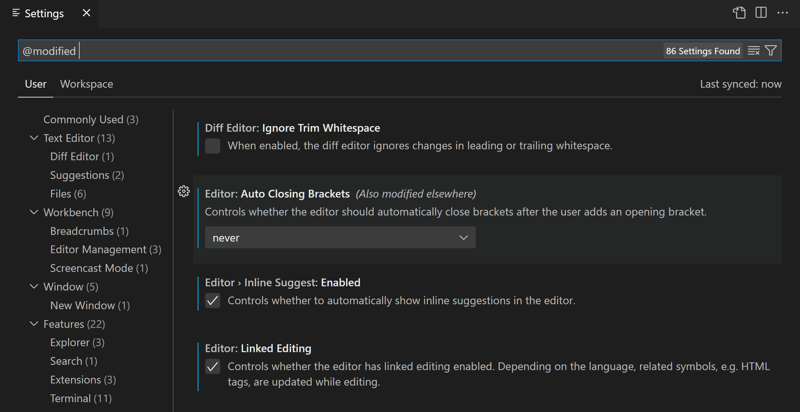
其他筛选器
还有其他几个方便使用的筛选器来帮助搜索设置。在搜索栏中键入 @ 符号即可发现不同的筛选器。
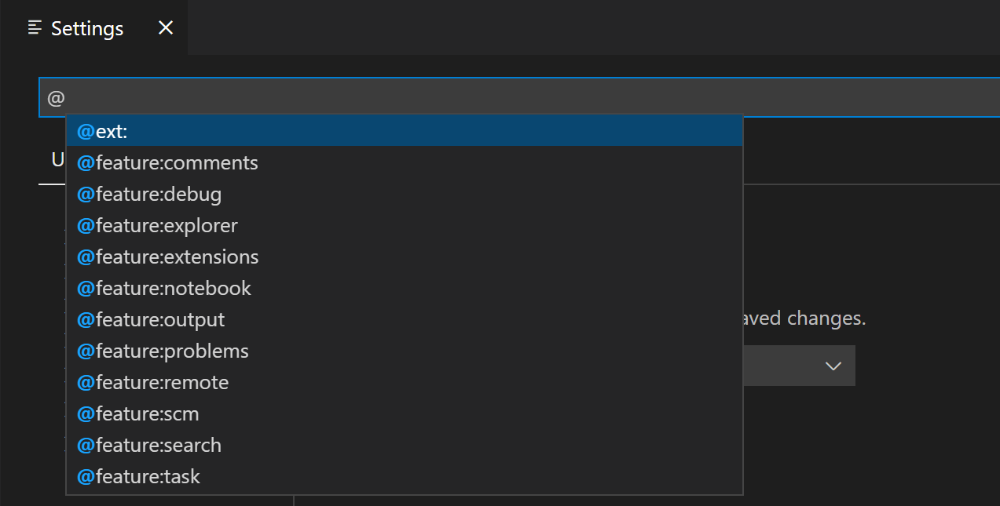
以下是可用的一些筛选器：
@ext: 特定于某个扩展的设置。你需要提供扩展 ID，例如@ext:ms-python.python。@feature: 特定于某个功能子组的设置。例如，@feature:explorer显示文件资源管理器的设置。@haspolicy: 受你的组织控制的设置。@id: 根据设置 ID 查找设置。例如，@id:workbench.activityBar.visible。@lang: 根据语言 ID 应用语言筛选器。例如，@lang:typescript。有关更多详细信息，请参阅特定语言的编辑器设置。@tag: 特定于 VS Code 某个系统的设置。例如，@tag:workspaceTrust用于与工作区信任相关的设置，@tag:accessibility用于与辅助功能相关的设置，或@tag:advanced用于高级 VS Code 设置。高级设置用于专门场景。默认情况下，高级设置在搜索结果中处于隐藏状态，除非你使用@tag:advanced筛选器。要始终在设置编辑器中显示高级设置，请启用setting(workbench.settings.alwaysShowAdvancedSettings)。
搜索栏会记住你的设置搜索查询，并支持撤销或重做（kb(undo)/kb(redo)）。你可以使用搜索栏右侧的清除设置搜索输入按钮快速清除搜索词或筛选器。
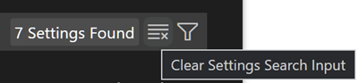
扩展设置
已安装的 VS Code 扩展也可以贡献自己的设置，你可以在设置编辑器的扩展部分下查看这些设置。
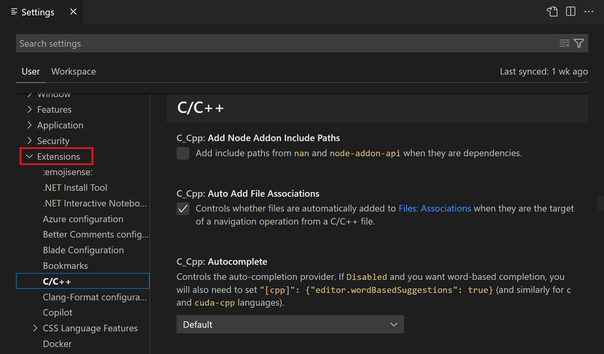
你也可以从扩展视图（kb(workbench.view.extensions)）中查看扩展的设置，方法是选择扩展并查看功能贡献选项卡。
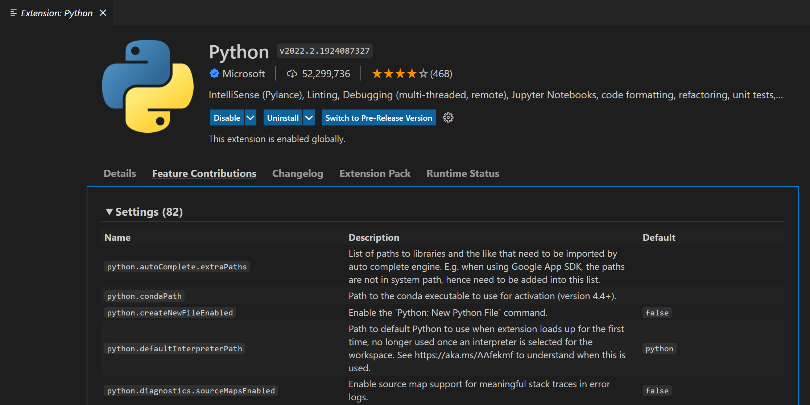
扩展作者可以在配置贡献点文档中了解有关添加自定义设置的更多信息。
Settings JSON 文件
VS Code 将设置值存储在 settings.json 文件中。设置编辑器是用户界面，使你能够查看和修改存储在 settings.json 文件中的设置值。
你也可以通过在命令面板（kb(workbench.action.showCommands)）中使用 首选项: 打开用户设置 (JSON) 或 首选项: 打开工作区设置 (JSON) 命令，直接在编辑器中打开 settings.json 文件来查看和编辑它。
设置以 JSON 形式编写，需要指定设置 ID 和值。你可以通过在设置编辑器中点击某个设置的齿轮图标，然后选择复制设置为 JSON 操作，快速复制该设置对应的 JSON 名称-值对。
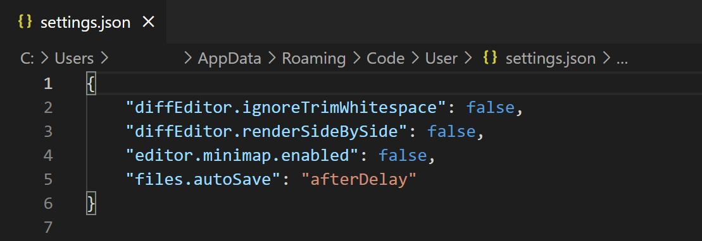
settings.json 文件具有完整的 IntelliSense 功能，提供设置和值的智能补全以及描述悬停提示。由错误的设置名称或 JSON 格式导致的错误也会被高亮显示。
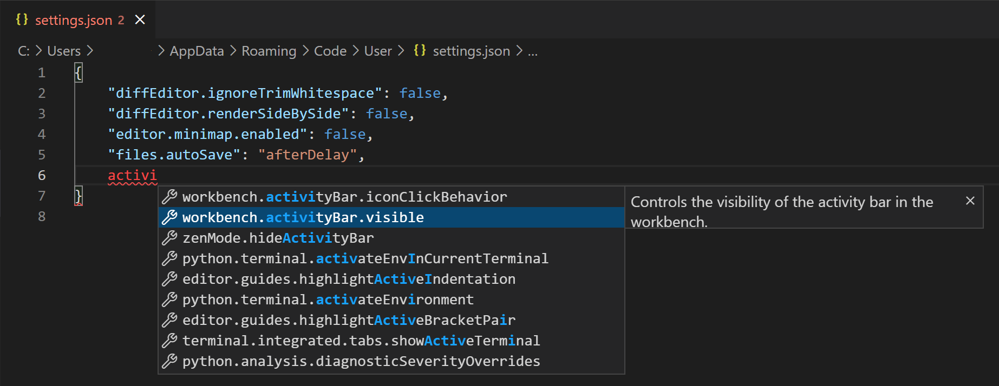
某些设置只能在 settings.json 中编辑，例如工作台: 颜色自定义，并且在设置编辑器中会显示在 settings.json 中编辑链接。
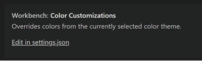
[!TIP]
如果你希望始终直接使用settings.json，可以将setting(workbench.settings.editor)设置为json。这样，文件 > 首选项 > 设置 和快捷键kb(workbench.action.openSettings)将始终打开settings.json文件，而不是设置编辑器 UI。
设置文件位置
用户 settings.json 位置
根据你的平台，用户设置文件位于以下位置：
- Windows
%APPDATA%\Code\User\settings.json - macOS
$HOME/Library/Application\ Support/Code/User/settings.json - Linux
$HOME/.config/Code/User/settings.json工作区 settings.json 位置
工作区设置文件位于根文件夹中的 .vscode 文件夹下。当你将工作区设置 settings.json 文件添加到你的项目或源代码管理中时，该项目的设置将被该项目的所有用户共享。
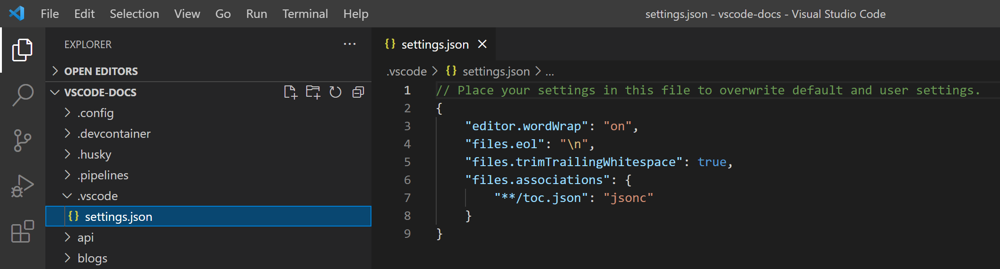
[!NOTE]
对于多根工作区，工作区设置位于工作区配置文件内部。
重置设置
你始终可以将某个设置重置为默认值，方法是悬停在该设置上以显示齿轮图标，点击齿轮图标，然后选择重置设置操作。
虽然你可以通过设置编辑器单独重置设置，但你也可以通过打开 settings.json 并删除花括号 {} 之间的所有条目来重置所有已更改的设置。请小心操作，因为无法恢复你之前的设置值。
特定语言的编辑器设置
自定义语言特定设置的一种方法是打开设置编辑器，点击筛选按钮，然后选择语言选项以添加语言筛选器。或者，可以直接在搜索小部件中键入 @lang:languageId 形式的语言筛选器。显示的设置将可针对该特定语言进行配置，并且如果适用，将显示该语言特定的设置值。
当你在存在语言筛选器的情况下修改设置时，该设置将针对该语言在给定作用域中进行配置。
例如，当搜索小部件中存在 @lang:css 筛选器时修改用户作用域的 setting(diffEditor.codeLens) 设置，设置编辑器会将新值保存到用户设置文件的 CSS 特定部分。
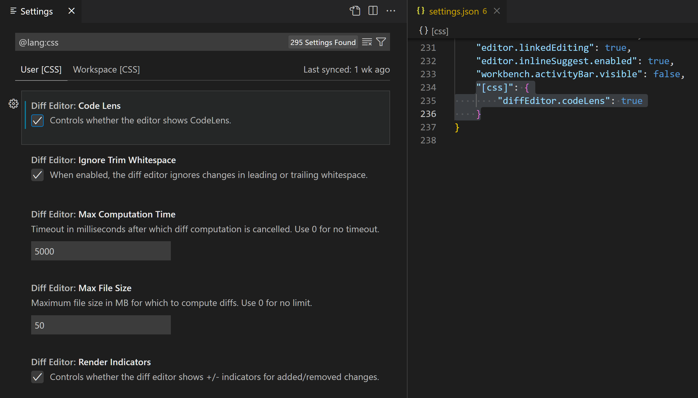
[!NOTE]
如果你在搜索小部件中输入多个语言筛选器，当前行为是仅使用第一个语言筛选器。
另一种按语言自定义编辑器的方法是，从命令面板（kb(workbench.action.showCommands)）中运行全局命令首选项: 配置语言特定设置（命令 ID: workbench.action.configureLanguageBasedSettings），这将打开语言选择器。选择你想要的语言。然后，设置编辑器将打开并带有选定语言的语言筛选器，允许你修改该语言的语言特定设置。不过，如果你将 setting(workbench.settings.editor) 设置设为 json，那么 settings.json 文件将打开并带有新的语言条目，你可以在其中添加适用的设置。
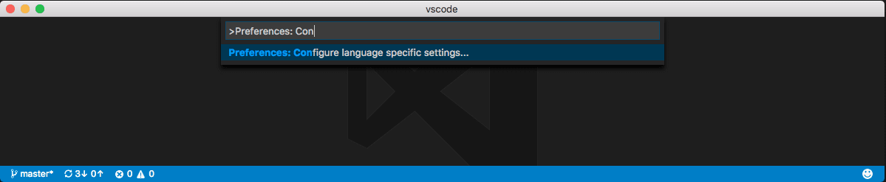
通过下拉菜单选择语言：
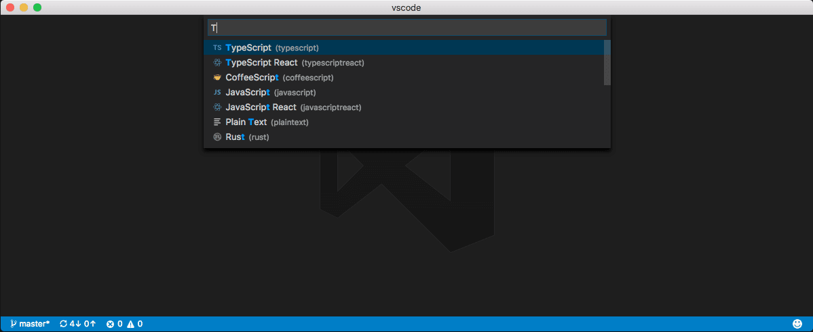
现在你可以开始专门为该语言编辑设置：
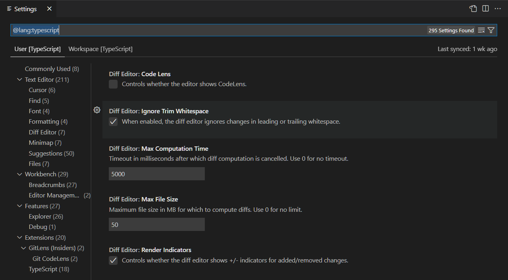
或者，如果 setting(workbench.settings.editor) 设置为 json，现在你可以开始向用户设置中添加语言特定设置：
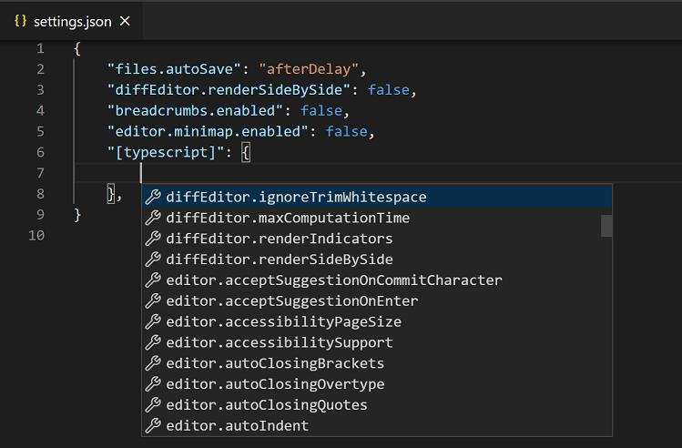
如果你打开了一个文件并想要针对此文件类型自定义编辑器，请选择 VS Code 窗口右下角状态栏中的语言模式。这将打开语言模式选择器，其中包含一个选项配置 'settings.json，并带有该语言条目，你可以在其中添加适用的设置。
语言特定的编辑器设置始终会覆盖非语言特定的编辑器设置，即使非语言特定设置具有更窄的作用域也是如此。例如，语言特定的用户设置会覆盖非语言特定的工作区设置。
你可以像其他设置一样，将语言特定设置的作用域限定在工作区中，方法是将它们放在工作区设置中。如果你在用户和工作区作用域中都为同一种语言定义了设置，那么它们会合并，优先采用工作区中定义的设置。
以下示例可以粘贴到 settings JSON 文件中，以自定义 typescript 和 markdown 语言模式的编辑器设置。
{
"[typescript]": {
"editor.formatOnSave": true,
"editor.formatOnPaste": true
},
"[markdown]": {
"editor.formatOnSave": true,
"editor.wordWrap": "on",
"editor.renderWhitespace": "all",
"editor.acceptSuggestionOnEnter": "off"
}
}你可以使用 settings.json 中的 IntelliSense 来帮助你查找语言特定设置。所有编辑器设置和一些非编辑器设置都受支持。某些语言已经设置了默认的语言特定设置，你可以通过运行首选项: 打开默认设置命令在 defaultSettings.json 中查看这些设置。
多语言特定编辑器设置
你可以同时为多种语言配置语言特定的编辑器设置。以下示例展示了如何在 settings.json 文件中一起自定义 javascript 和 typescript 语言的设置：
"[javascript][typescript]": {
"editor.maxTokenizationLineLength": 2500
}如果某个设置在单一语言块和多语言块中都进行了配置，则单一语言的值优先。此优先级在正常设置作用域优先级规则之前应用。
配置文件设置
你可以使用 VS Code 中的配置文件来创建自定义设置集并在它们之间快速切换。例如，它们是为特定编程语言自定义 VS Code 的绝佳方式。
当你切换到某个配置文件时，用户设置的作用域仅限于该配置文件。当你切换到另一个配置文件时，将应用该另一个配置文件的用户设置。这样，你可以为不同的配置文件设置不同的设置。
配置文件的用户设置 JSON 文件位于以下目录：
- Windows
%APPDATA%\Code\User\profiles\\settings.json - macOS
$HOME/Library/Application\ Support/Code/User/profiles//settings.json - Linux
$HOME/.config/Code/User/profiles//settings.json
[!NOTE]
只有当你在该配置文件中修改了设置时，才会创建该配置文件的 settings.json 文件。
当你使用非默认配置文件时，可以使用命令面板（kb(workbench.action.showCommands)）中的 首选项: 打开应用程序设置 (JSON) 命令访问与默认配置文件关联的 settings.json 文件。
设置优先级
配置可以在多个级别上被不同设置作用域覆盖。在以下列表中，后面的作用域会覆盖前面的作用域：
- 默认设置 - 此作用域表示默认的未配置设置值。
- 用户设置 - 全局应用于所有 VS Code 实例。
- 远程设置 - 应用于用户打开的远程计算机。
- 工作区设置 - 应用于打开的文件夹或工作区。
- 工作区文件夹设置 - 应用于多根工作区的特定文件夹。
- 语言特定默认设置 - 这些是可以由扩展贡献的语言特定默认值。
- 语言特定用户设置 - 与用户设置相同，但特定于某种语言。
- 语言特定远程设置 - 与远程设置相同，但特定于某种语言。
- 语言特定工作区设置 - 与工作区设置相同，但特定于某种语言。
- 语言特定工作区文件夹设置 - 与工作区文件夹设置相同，但特定于某种语言。
- 策略设置 - 由系统管理员设置，这些值始终覆盖其他设置值。
设置值可以是多种类型：
- 字符串 -
"files.autoSave": "afterDelay" - 布尔值 -
"editor.minimap.enabled": true - 数字 -
"files.autoSaveDelay": 1000 - 数组 -
"editor.rulers": [] - 对象 -
"search.exclude": { "/node_modules": true, "/bower_components": true }[!NOTE]
像
files.exclude和search.exclude这样的设置使用 glob 模式，这些模式遵循你操作系统文件系统的大小写敏感性（Windows/macOS 上不区分大小写，Linux 上区分大小写）。同样，.gitignore文件模式（用于setting(explorer.excludeGitIgnore)设置）也遵循平台特定的大小写敏感性规则。
具有基本类型和数组类型的值会被覆盖，意味着在优先于另一个作用域的作用域中配置的值将替代另一个作用域中的值。但是，具有对象类型的值会被合并。
例如，setting(workbench.colorCustomizations) 接受一个对象，该对象指定一组 UI 元素及其所需的颜色。如果你的用户设置将编辑器背景设为蓝色和绿色：
"workbench.colorCustomizations": {
"editor.background": "#000088",
"editor.selectionBackground": "#008800"
}而你的打开的工作区设置将编辑器前景设为红色：
"workbench.colorCustomizations": {
"editor.foreground": "#880000",
"editor.selectionBackground": "#00FF00"
}当该工作区打开时，结果是这两个颜色自定义的组合，就如同你指定了：
"workbench.colorCustomizations": {
"editor.background": "#000088",
"editor.selectionBackground": "#00FF00",
"editor.foreground": "#880000"
}如果存在冲突值，例如上面示例中的 editor.selectionBackground，则出现通常的覆盖行为，工作区值优先于用户值，语言特定值优先于非语言特定值。
关于多语言特定设置的说明
如果你使用多语言特定设置，请注意语言特定设置会被合并，优先级基于完整的语言字符串（例如 "[typescript][javascript]"），而非单个语言 ID（typescript 和 javascript）。这意味着，例如，"[typescript][javascript]" 工作区设置不会覆盖 "[javascript]" 用户设置。
设置与安全
某些设置允许你指定 VS Code 将运行的可执行文件来执行某些操作。例如，你可以选择集成终端应使用哪个 shell。为了增强安全性，此类设置只能在用户设置中定义，而不能在工作区作用域中定义。
以下是不支持在工作区设置中使用的设置列表：
setting(git.path)setting(terminal.external.windowsExec)setting(terminal.external.osxExec)setting(terminal.external.linuxExec)
首次打开定义了这些设置中任何一项的工作区时，VS Code 会警告你，然后始终忽略这些值。
设置同步
你可以使用设置同步功能在 VS Code 实例之间共享你的用户设置。此功能使你能够在不同机器上的 VS Code 安装之间共享设置、键盘快捷键和已安装的扩展。你可以通过设置编辑器右侧的备份和同步设置命令或帐户活动栏上下文菜单来启用设置同步。
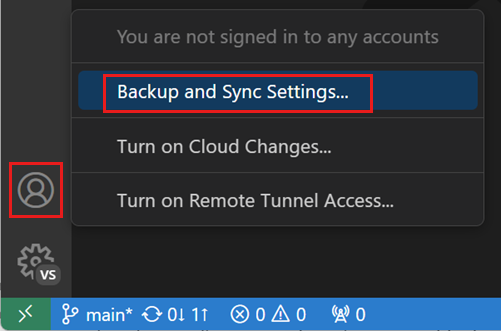
你可以在设置同步用户指南中了解有关启用和配置设置同步的更多信息。
[!NOTE]
VS Code 不会将你的扩展同步到远程窗口或从远程窗口同步扩展，例如当你连接到 SSH、开发容器（devcontainer）或 WSL 时。
功能生命周期
功能及其相应的设置可以处于以下状态之一。根据状态，你可能会对在自己的工作流中使用该功能或设置持谨慎态度。
- 实验性 - 面向早期采用者的探索性功能。这些功能将来可能会更改或删除。在设置编辑器中，这些设置带有
实验性标签。你也可以通过在搜索框中输入@tag:experimental来搜索实验性设置。
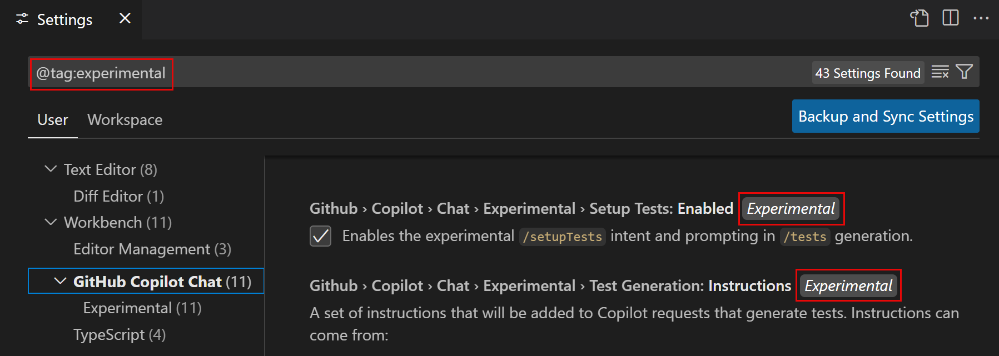
- 预览 - 预览功能和设置具有最终的功能，但仍可能在稳定性和完善方面继续迭代。通常，预览功能默认处于禁用状态。在设置编辑器中，这些设置带有
预览标签。你也可以通过在搜索框中输入@tag:preview来搜索预览设置。
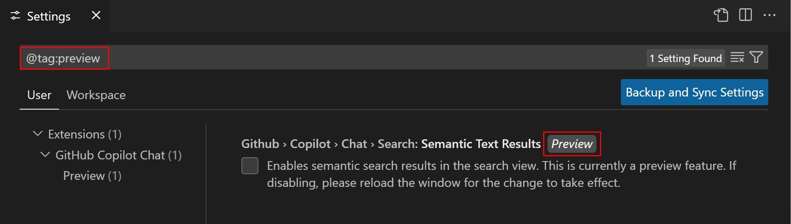
- 稳定 - 该功能是稳定的，并在 VS Code 中得到完全支持。
实验性和预览功能使你能够试用新功能并提供反馈。请在我们的 VS Code 问题中分享你的反馈。
相关资源
- VS Code 默认设置参考
- 跨机器同步设置
常见问题
VS Code 提示"无法写入设置。"
如果你尝试更改设置（例如启用自动保存或选择新的颜色主题），并看到"无法写入用户设置。请打开用户设置以更正其中的错误/警告并重试。"，这意味着你的 settings.json 文件格式不正确或存在错误。错误可能很简单，如缺少逗号或设置值不正确。使用命令面板（kb(workbench.action.showCommands)）中的 首选项: 打开用户设置 (JSON) 命令打开 settings.json 文件，你应该会看到用红色波浪线高亮显示的错误。
如何重置我的用户设置？
将 VS Code 重置回默认设置的最简单方法是清除你的用户 settings.json 文件。你可以使用命令面板（kb(workbench.action.showCommands)）中的 首选项: 打开用户设置 (JSON) 命令打开 settings.json 文件。文件在编辑器中打开后，删除两个花括号 {} 之间的所有内容，保存文件，VS Code 将恢复使用默认值。
什么时候适合使用工作区设置？
当你使用的工作区需要自定义设置，但又不想将这些设置应用到你的其他 VS Code 项目时。一个很好的例子是语言特定的 linting 规则。
在哪里可以找到扩展设置？
通常，VS Code 扩展将其设置存储在你的用户或工作区设置文件中，并且可以通过设置编辑器 UI（首选项: 打开设置 (UI) 命令）或通过 settings.json 文件中的 IntelliSense（首选项: 打开用户设置 (JSON) 命令）访问它们。按扩展名称搜索（例如 gitlens 或 python）可以帮助将设置筛选为仅由某个扩展贡献的设置。